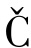
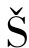
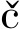
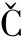
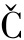
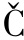
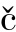

捷克人在斯拉夫民族[737]中是最古的人民，也有着最富的文学。但在二十年代[738]，几乎很少见一本波希米亚文[739]的书，后来出了J.Kollár[740]以及和他相先后的文人，文学才有新生命，到前世纪末，他们已有三千以上的文学家了！
这丰饶的捷克文学界里，最显著的三大明星是：纳卢达（1834—91），捷克（1846—），符尔赫列支奇[741]（1853—1912）。现在译取凯拉绥克（Josef Karásek）《斯拉夫文学史》[742]第二册第十一十二两节与十九节的一部分，便正可见当时的大概；至于最近的文学，却还未详。此外尚有符尔赫列支奇的同人与支派如Ad.

erny，J.S.Machar，Anton Sova[743]；以及散文家如K.Rais，K.Klostermann，Mrštik兄弟，M.
@@im
ek，Alois Jirásek[744]等，也都有名，惜现在也不及详说了。二一年九月五日，附记。
注 释
[736] 本篇连同《近代捷克文学概观》的译文，最初发表于1921年10月《小说月报》第十二卷第十号“被损害民族的文学号”，署名唐俟。
[737] 斯拉夫民族 欧洲最大的民族共同体，分为东斯拉夫人、西斯拉夫人、南斯拉夫人。捷克人和斯洛伐克人都属于西斯拉夫人。
[738] 二十年代 指十九世纪二十年代。
[739] 波希米亚文 即捷克文。波希米亚在捷克西部，原为捷克民族聚居地区。
[740] J.Kollár 扬·柯拉尔（1793—1852），捷克诗人。他以民族语言写作，为捷克文学最早缔造者之一。主要作品有诗集《斯拉夫的女儿》等。
[741] 纳卢达（J.Neruda） 现译聂鲁达，捷克诗人、政论家，捷克现实主义文学创始人之一。他的诗歌继承民歌传统，富有指斥社会不平、反抗民族压迫的精神。主要作品有诗集《墓地的花朵》、《宇宙之歌》，小说《小城故事》等。捷克（S.

ech，1846—1908），通译捷赫，捷克诗人、小说家，曾积极参加民族独立运动。他的作品多反映捷克人民遭受民族压迫和社会压迫的痛苦。主要作品有诗集《黎明之歌》、《奴隶之歌》等和长篇讽刺小说《勃鲁契克先生第一次月球旅行记》等。符尔赫列支奇（J.Vrchlický），本名弗利达（E.Frida），捷克诗人、剧作家及翻译家，主要作品有《叙事诗集》、《世界的精神》、《神话集》等诗集。[742] 凯拉绥克 通译卡拉塞克，参看本卷第202页注〔5〕。所著《斯拉夫文学史》（Slavische Literaturgeschichte）第二卷（德文原版）出版于1906年。
[743] Ad.

erny 阿多尔夫·契尔尼（Adolf
erny，1864—？）捷克作家。J.S.Machar，马察尔（1864—1942），捷克诗人，评论家。第一次世界大战时曾因参加祖国独立运动被捕入狱。主要作品有《萨蒂利之死》、《马格达伦》等。Anton Sova，安东宁·索瓦（Antonin Sova，1864—1928），捷克诗人。他信仰空想社会主义，创作受法国象征派的影响。主要作品有《受挫折的心》、《过去的烦恼》等。[744] K.Rais 莱斯（1859—1926），捷克作家，他的小说多反映农民和山地居民的痛苦，并同情工人争取美好生活的斗争。K.Klostermann，克罗斯退曼（1848—1923），生于德国的捷克作家，他的作品主要描写西南波希米亚地区的现实生活。Mrštik兄弟，莫尔什蒂克兄弟，兄名阿洛伊思（Alois Mrštik，1861—1924），捷克作家，著有《在乡村的一年》等；弟名威廉（Vilém Mrštik，1863—1912），著有《五月的故事》及长篇《圣塔卢齐亚》等。M.Šim

ek，什马切克（1860—1913），捷克作家，曾在甜菜糖厂工作。著有《在切割机旁》、《工厂的灵魂》等。Alois Jirásek，阿洛伊思·伊拉塞克（1851—1930），捷克作家。他的作品充满对祖国独立和自由的向往。著有长篇小说《斯卡拉奇》、《在激流中》、《在我们国土上》及剧本《扬·日什卡》、《扬·胡斯》等。